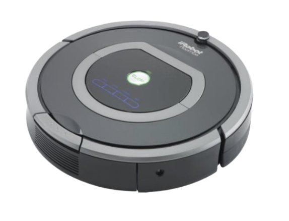
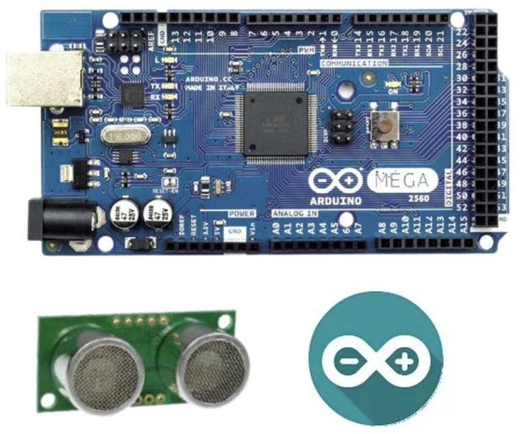
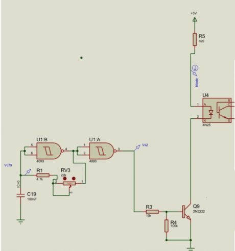
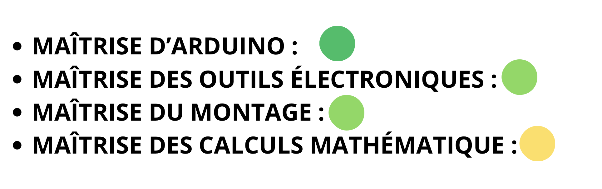
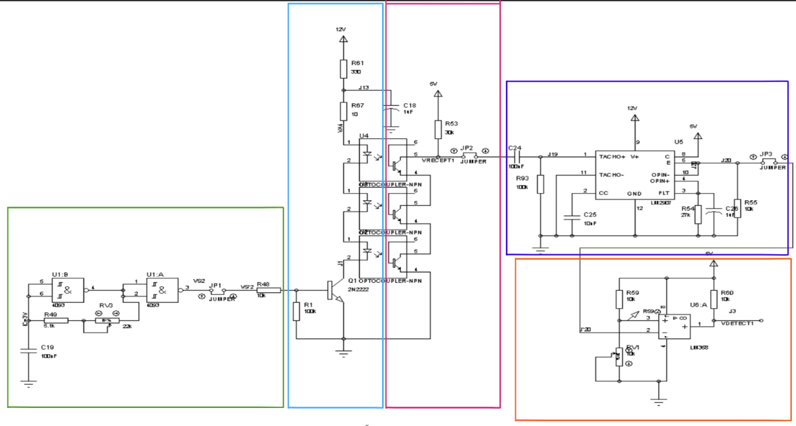

Contexte :
- Le robot aspirateur intègre divers capteurs essentiels à son fonctionnement autonome. Notre projet consiste à travaillé sur le système de navigation du robot aspirateur. Nous avons développé et intégré un capteur de détection de vide, une fonction critique permettant au robot de détecter les obstacles de type escaliers ou zones de chute, et d'adapter sa trajectoire en faisant demi-tour.
Logiciels et outils :
- La phase initiale de ce projet a consisté à effectuer des tests de vérification via le logiciel de Programmation Arduino IDE et une carte Arduino MEGA. Dans un second temps, nous avons procédé à la réalisation du circuit éléctronique sur des plaques à essai. Cette étape nous a permis, à l'aide d'oscilloscopes, d'analyser les signaux et de valider le bon fonctionnement du capteur de détection de vide en conditions réelles.
Ressenti :
- Avec les expériences tirées de mon premier projet, j'ai immédiatement adopté une approche plus structurée en organisant le travail d'équipe et en définissant une répartition claire des tâches. Cette anticipation m'a permis d'aborder la mission avec une plus grande sérénité, bien que le respect des délais soit resté une priorité constante tout au long du développement. La prise en main de l'environnement Arduino a été fluide et intuitive. Le principal défi a résidé dans la transposition du schéma électronique sur plaques à essai a exigé une grande rigueur pour garantir la fiabilité des connexions et la clarté du montage.
Auto-Évaluation
Conclusion :
- Malgré une organisation rigoureuse, nous avons été confrontés à des défaillances matérielles et à des imprévus techniques lors du câblage. Ces obstacles nous ont contraints à une mobilisation intense jusqu'à la finalisation du projet. Cette expérience a été riche en enseignements : elle m'a permis de comprendre l'importance d'inclure une marge de sécurité pour les pannes matérielles dans le planning. Nous avons su faire preuve de réactivité pour livrer un projet fonctionnel, tout en intégrant cette nouvelle leçon d'anticipation pour mes futures réalisations.